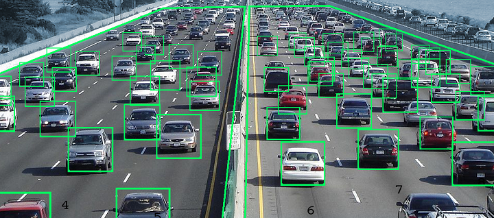

| Picture |
Description |
|
AI plays crucial role in strategic games such as chess, poker, tic-tac-toe, etc.,where machine can think of large number of possible positions based on heuristic knowledge.
|
 |
It is possible to interact with the computer that
understands natural language spoken by humans.
|
 |
There are some applications which integrate machine, software, and special information to impart reasoning and advising. They provide explanation and advice to the users.
|
|  |
These systems understand, interpret, and comprehend visual input on the computer. For example:
- A spying aeroplane takes photographs, which are used to figure out spatial information or map of the areas.
- Doctors use clinical expert system to diagnose the patient.
- Police use computer software that can recognize the face of criminal with the stored portrait made by forensic artist.
|
|
Some intelligent systems are capable of hearing and
comprehending the language in terms of sentences and their meanings while a human talks to it. It can handle different accents, slang words, noise in the background, change in human’s noise due to cold, etc. |
|
The handwriting recognition software reads the text written on paper by a pen or on screen by a stylus. It can recognize the shapes of the letters and convert it into editable text.
|
|
Robots are able to perform the tasks given by a human. They have sensors to detect physical data from the real world such as light, heat, temperature,movement, sound, bump, and pressure. They have efficient processors, multiple sensors and huge memory, to exhibit intelligence. In addition, they are capable of learning from their mistakes and they can adapt to the new environment.
|